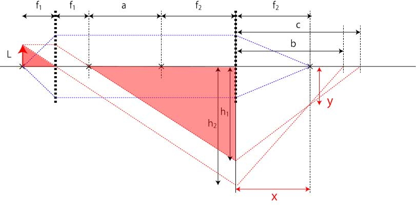
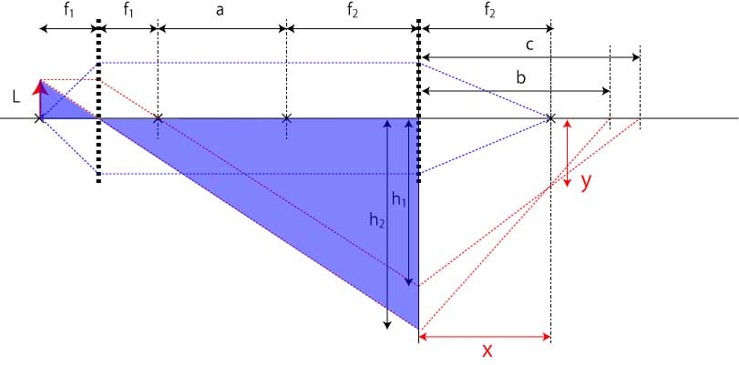
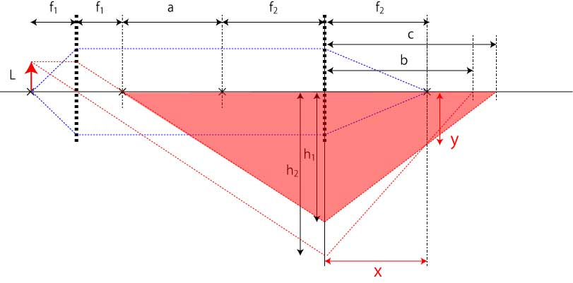
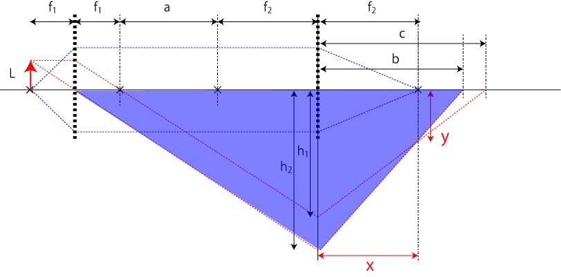
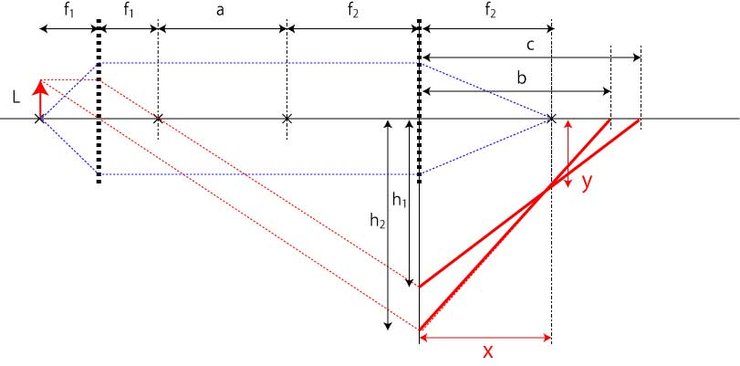

無限遠光学系の結像特性，倍率-03
二つの交線の交点がf2の位置と同じになるか？
相似
図には二つの相似形が存在します． h1，h2を高さとする三角形である． その関係式は，
\(\Large \frac{L}{f_1} = \frac{h_1}{a+f_2}\)

\(\Large \frac{L}{f_1} = \frac{h_2}{a+f_1+f_2}\)

となります．
レンズの公式
f2を焦点に持つレンズから以下の二つの関係式を導き出すことができます．
\(\Large \frac{1}{a+f_2} + \frac{1}{c} = \frac{1}{f_2}\)

\(\Large \frac{1}{a+f_1+f_2} + \frac{1}{b} = \frac{1}{f_2}\)

交点の座標
Lから発せられた光は，レンズf1，f2を経由して結像します．
レンズf2の中心を原点とするとそれぞれの直線は，
\(\Large Y=\frac{h_2}{b}x - h_2 \)
\(\Large Y= \frac{h_1}{c}x-h_1\)
となります，

この二つの直線の交点の位置は，
\(\Large \frac{h_2}{b}x - h_2 = \frac{h_1}{c}x-h_1\)
\(\Large \begin{pmatrix} \frac{h_2}{b}-\frac{h_1}{c} \end{pmatrix} x = h_2-h_1\)
の関係式を得ることができます．
ここで，まだ
\(\Large ｘ= f_2 \)
であるかはわかりません．
これらの三つの関係式を使って解いていきましょう．
相似，レンズの公式から，
\(\Large \frac{L}{h_1 f_1} + \frac{1}{c} = \frac{1}{f_2}\)
\(\Large \frac{L}{h_2 f_1} + \frac{1}{b} = \frac{1}{f_2}\)
となります．これより，
\(\Large \frac{L}{f_1} + \frac{h_1}{c} = \frac{h_1}{f_2}\)
\(\Large \frac{h_1}{c} = \frac{h_1}{f_2}- \frac{L}{f_1} \)
\(\Large \frac{L}{f_1} + \frac{h_2}{b} = \frac{h_2}{f_2}\)
\(\Large \frac{h_2}{b} = \frac{h_2}{f_2}- \frac{L}{f_1}\)
となり，交点の式に代入すると，
\(\Large \begin{bmatrix} \begin{pmatrix} \frac{h_2}{f_2}- \frac{L}{f_1} \end{pmatrix} - \begin{pmatrix}\frac{h_1}{f_2}- \frac{L}{f_1} \end{pmatrix} \end{bmatrix}x = h_2-h_1\)
\(\Large \begin{pmatrix} \frac{h_2}{f_2}-\frac{h_1}{f_2} \end{pmatrix} x = h_2-h_1\)
\(\Large \frac{1}{f_2} (h_2-h_1) x = h_2-h_1\)
\(\Large x = f_2\)
となり，距離，aに関わらず常にf2となることがわかります．
次に，倍率を確かめていきましょう．